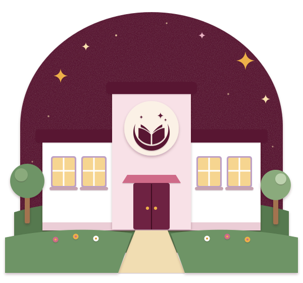

Ensinando com responsabilidade ontem, hoje e sempre.
Da Educação Infantil ao Fundamental I, o Sonho Meu cuida de cada etapa com o mesmo compromisso: criança chamada pelo nome, ouvida com calma e acompanhada de perto, junto da família.
- Da Educação Infantil ao 5º ano
- Turmas de até 18 crianças
- Meio período ou integral
Uma escola do tamanho da infância
A Sonho Meu nasceu em 2004 como escola de bairro: perto de casa, com portão conhecido e professores que sabem o nome de cada criança. Responsabilidade ontem, cuidado hoje e compromisso sempre: crescemos sem perder esse jeito.
O que nos guia
- AcolherA adaptação é feita com calma, junto da família.
- EscutarAs perguntas das crianças orientam os projetos.
- ExperimentarErrar faz parte: aqui se testa e se tenta de novo.
- ConviverCombinados, cooperação e respeito às diferenças.

Cada pergunta vira um projeto
Seguimos a BNCC com uma metodologia de projetos: o ponto de partida é a curiosidade da turma, e o caminho é feito de investigação, brincadeira e registro.
-
Perguntar
Uma dúvida da turma vira tema. Por que a lua muda de forma?
-
Investigar
Livros, experiências, passeios e conversas com quem entende do assunto.
-
Criar
Maquetes, desenhos, textos e experimentos para mostrar o que aprenderam.
-
Compartilhar
As crianças apresentam as descobertas para colegas e famílias.
e cada descoberta traz uma nova pergunta
Cada idade tem seu jeito de aprender
Educação Infantil de 2 a 5 anos
Brincar é a principal linguagem. Roda de conversa, parque, artes, música e os primeiros encontros com letras e números.
Ensino Fundamental I do 1º ao 5º ano
Alfabetização com sentido, matemática com material concreto e projetos que ligam as disciplinas, com inglês, artes e educação física.
Período integral opcional, com almoço, descanso e oficinas no contraturno.
- 2anosMaternal I, 2 anos
- 3anosMaternal II, 3 anos
- 4anosPré I, 4 anos
- 5anosPré II, 5 anos
- 1ºano1º ano
- 2ºano2º ano
- 3ºano3º ano
- 4ºano4º ano
- 5ºano5º ano
Tudo pertinho, do portão à sala
Uma escola compacta, em que cada espaço fica a poucos passos do outro e as crianças estão sempre por perto. Escolha um lugar para ver na planta.
Salas de aula. Quatro salas de aula, organizadas por turma, onde acontecem as aulas e os projetos do dia a dia.
Um dia por aqui
Uma rotina previsível dá segurança. Escolha um horário para acompanhar o dia de uma turma da Educação Infantil.
7h
Chegada
Acolhida na porta da sala, com tempo para a despedida.
Período integral
O portão está aberto
Visitas guiadas de segunda a sexta. Venha com a criança, conheça os espaços e converse com a coordenação.
- EndereçoAvenida Frei Teodoro, 730, Planalto Ayrton Senna, Fortaleza - CEVer no mapa e traçar rota
- Telefone(85) 98771-5486
- WhatsApp(85) 98771-5486
- E-mailsecretaria@sonhomeu.edu.br
- SecretariaSegunda a sexta, das 7h às 17h